A forma escorrega.
A parede muda de lugar, a janela cresce, a escada ganha um degrau. A imagem já não confere com a planta.
O IA Render Lab transforma a vista do seu SketchUp em imagem realista em cerca de 30 segundos. Forma, câmera e materiais seguem o modelo. E o render já sai alinhado com o wirecolor, pronto para o Photoshop.
Beta aberto · 10 moedas para quem responder a pesquisa · SketchUp 2025+ · Windows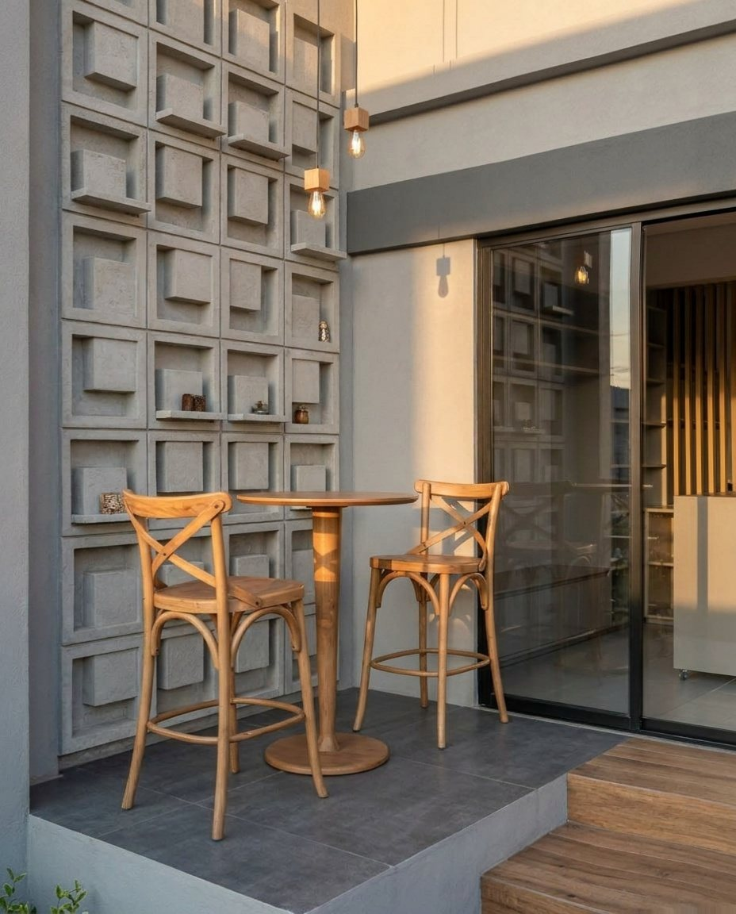
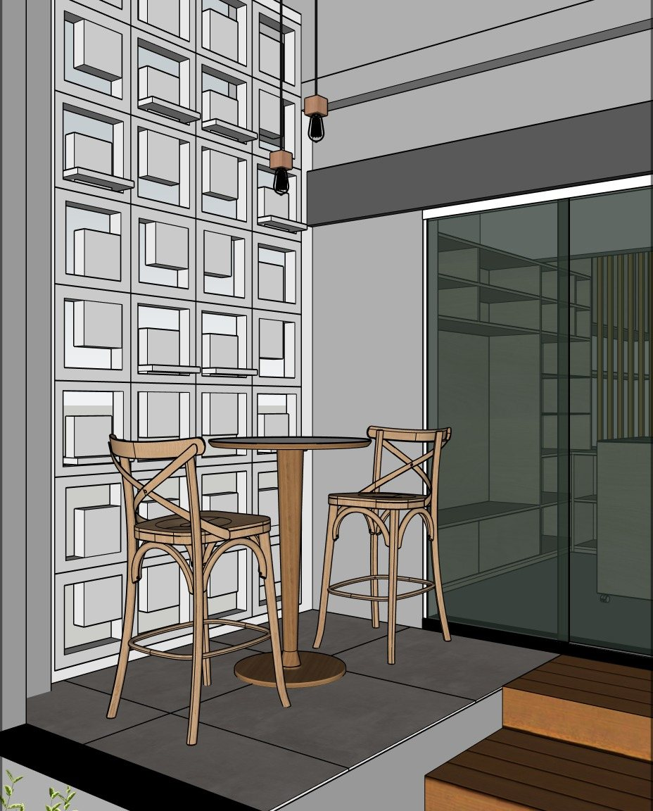
Vista SketchUp Render IAFica bonito. Mas não é o projeto que você mostrou ao cliente.
A parede muda de lugar, a janela cresce, a escada ganha um degrau. A imagem já não confere com a planta.
O carvalho vira nogueira, o branco vira bege, a bancada ganha veios que ninguém especificou.
O render não bate com o wirecolor. Selecionar um material no Photoshop vira recorte à mão.
Cada render é alinhado automaticamente com a vista crua do SketchUp, no tamanho exato do wirecolor. Sobrepôs no Photoshop, selecionou com a varinha mágica, pronto.
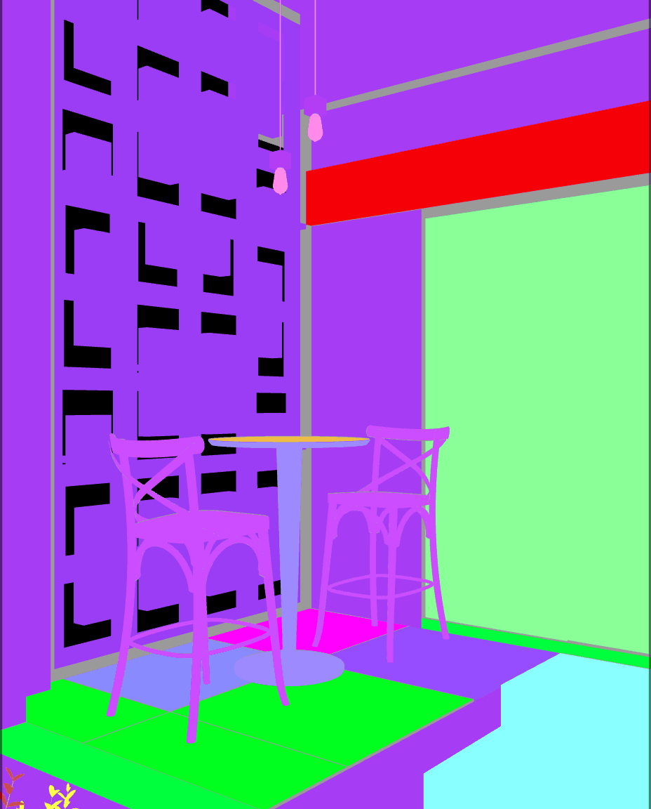
Renders reais do IA Render Lab, todos sem escrever prompt. Arraste a linha para comparar com a vista original.
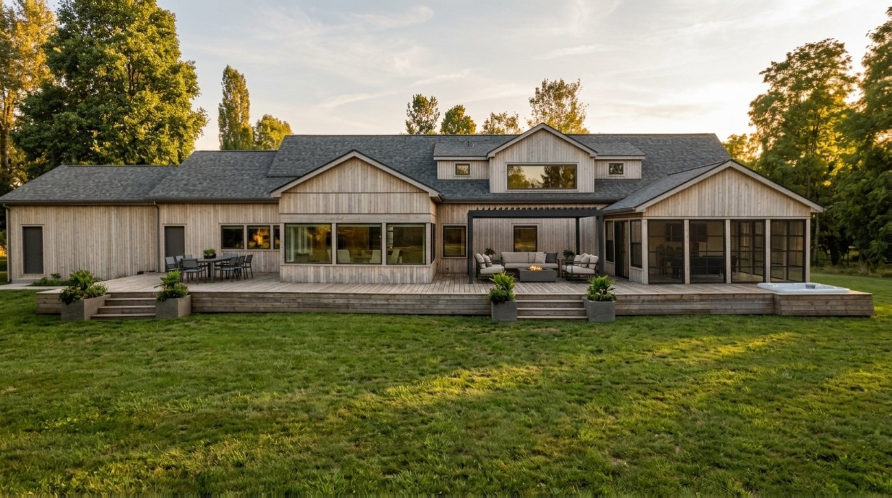
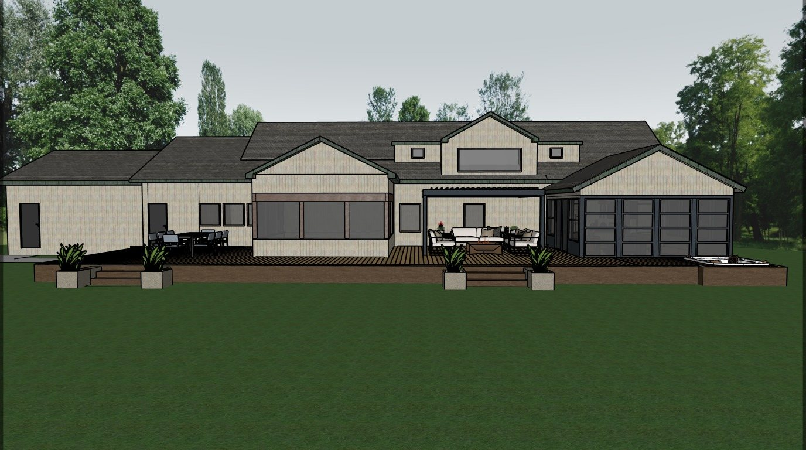
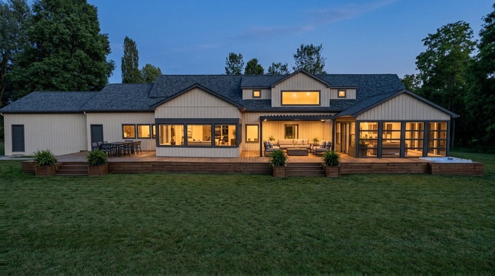
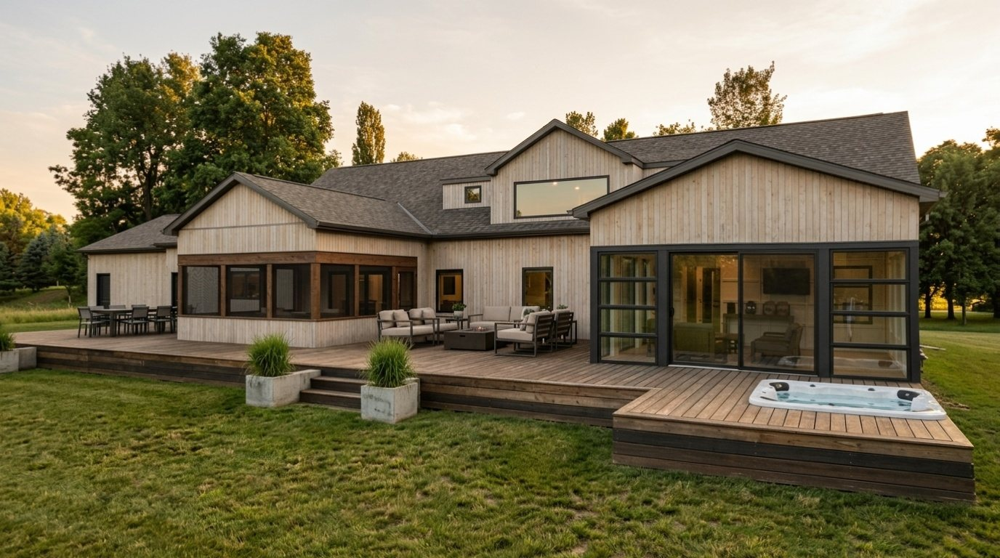
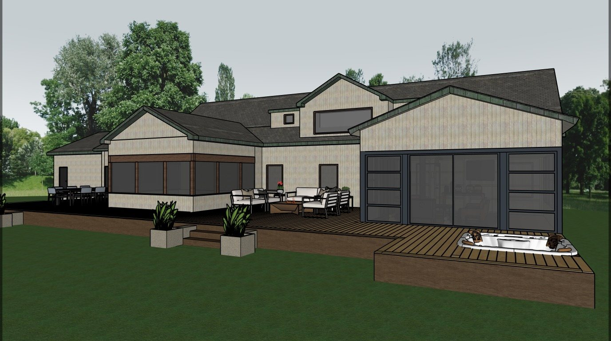
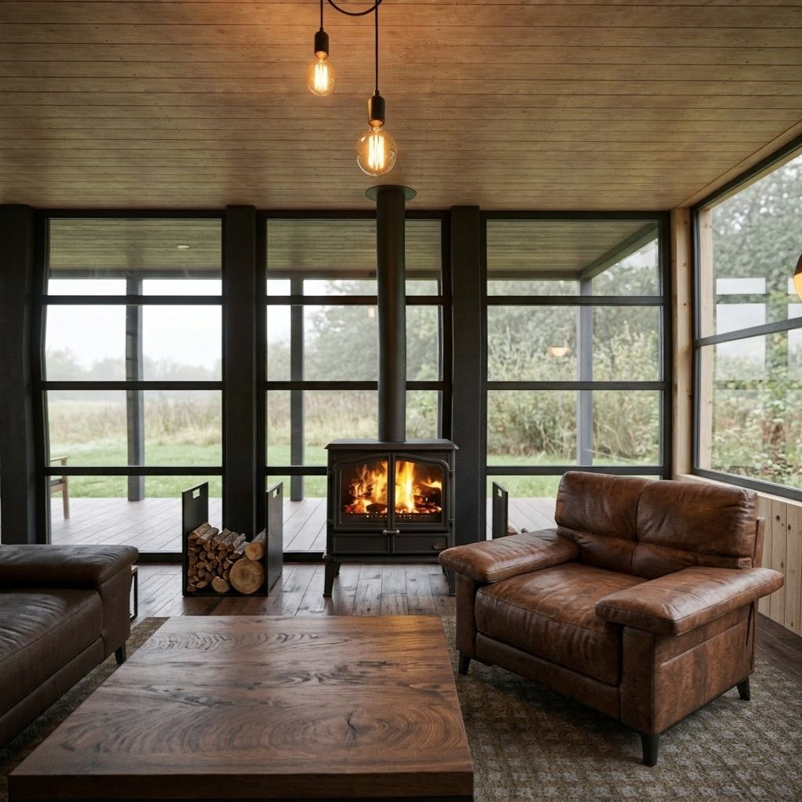
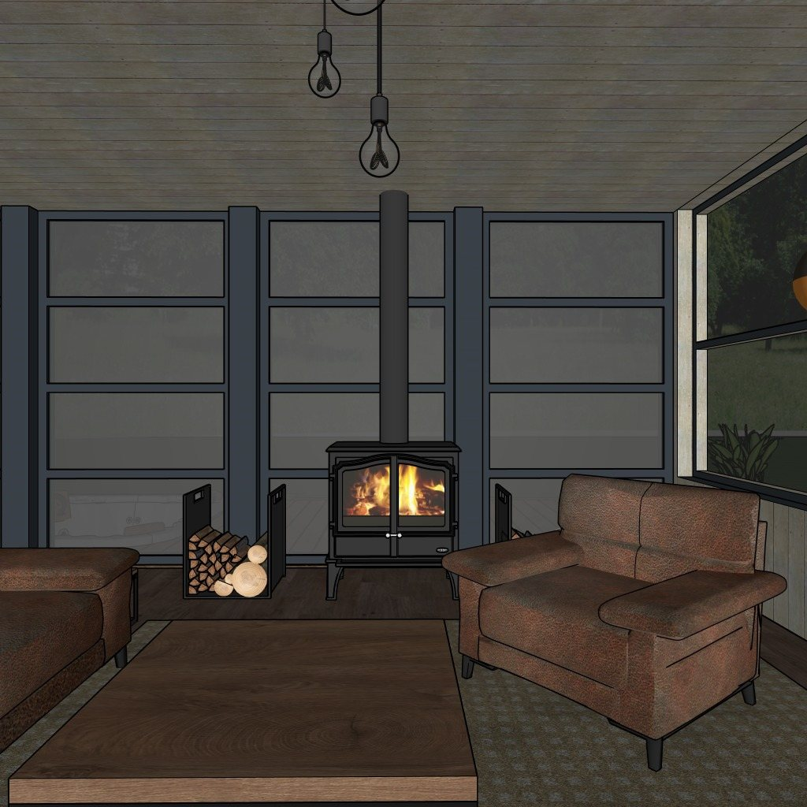
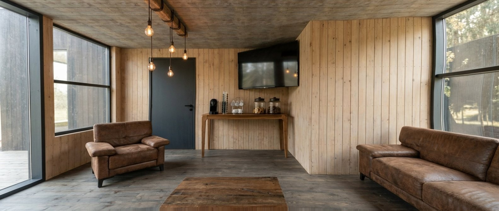
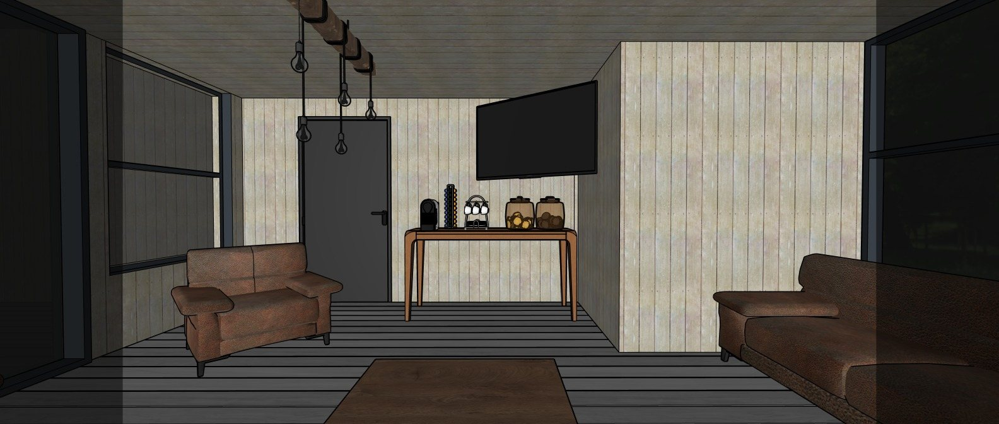
A panorâmica sai do olho da câmera do SketchUp e a IA renderiza o ambiente inteiro, pelo custo de uma imagem. Arraste para olhar em volta; arraste a linha para comparar com o modelo.
Sem exportar, sem trocar de programa. Tudo acontece dentro do SketchUp.
Use a sua câmera ou a janela Câmera do plugin: lentes em mm, verticais endireitadas, formatos 16:9 e 4:5.
Tipo de cena, atmosfera e resolução. O plugin monta o pedido para a IA. O campo de texto é opcional.
Em cerca de 30 segundos o render chega ao frame buffer: antes e depois, wirecolor, salvar e copiar.
Marque as cenas e gere todas de uma vez. Cada uma com a sua câmera e o seu estilo.
Panorâmica 2:1 a partir do olho da câmera, já marcada como foto 360°. Custa o mesmo que uma imagem.
Cria as cenas de planta com altura de corte e estilo, em projeção paralela, e humaniza com a IA.
De uma foto para uma textura seamless, no tamanho real em cm. Vai direto para o balde de tinta.
Lentes de 14 a 85 mm, altura do olho, verticais endireitadas e guias de composição.
Selecione a face do espelho: ela recebe exatamente o que reflete, recalculado a cada render.
Antes e depois, render ou wirecolor, zoom, salvar, copiar e abrir a pasta.
Salve as suas receitas de render e repita o mesmo look em todos os projetos.
| Render tradicional | IAs de imagem | IA Render Lab | |
|---|---|---|---|
| Tempo por imagem | Horas de configuração e máquina | Segundos | Cerca de 30 segundos |
| Respeita forma e materiais | Sim | Não garantem | Sim, travados no pedido |
| Alinha com o wirecolor | Sim | Não | Sim, automático |
| Placa de vídeo forte | Precisa | Não precisa | Não precisa |
| Dentro do SketchUp | Depende do motor | Quase sempre não | Sim |
| Escrever prompt | Não | Sim | Opcional |
Sem licença anual, sem placa de vídeo. Cada imagem custa moedas conforme a resolução.
Moedas do plano. Entram a cada cobrança mensal aprovada. Na renovação, a sobra do mês zera.
Moedas avulsas. Preço por moeda cada, com Pix ou cartão. Não expiram e somam com as do plano.
Modo demonstração. Teste todo o fluxo do plugin sem internet e sem gastar moedas.
O plano renova todo mês no cartão. As avulsas você compra quando precisar, com Pix ou cartão, e elas não expiram.
carregando preços…
pagamento processado pelo Mercado Pago · 1 computador por conta · ver detalhes dos planos · ● já tem conta? entrar
Estamos abrindo o IA Render Lab para um grupo de arquitetos, designers e renderistas. Conte como você faz imagens hoje e receba 10 moedas para testar: 10 imagens em 1K ou 5 em 2K.
SketchUp 2025 ou mais novo, no Windows. Para gerar é preciso internet; o modo demonstração funciona sem conexão.
Só a imagem da vista sai do seu computador: ela vai pelo servidor da enlabs até o modelo de IA do Google (Gemini) para gerar o render. O arquivo .skp não é enviado. Você lê e aceita o aviso de privacidade antes do primeiro envio.
Não. Tipo de cena, atmosfera e ambientação já montam o pedido. O campo de texto existe para ajustes finos, como "fim de tarde" ou "piso mais claro".
O pedido trava forma, câmera e materiais e libera só o realismo: luz, reflexo, textura fina. Se um render sair diferente demais da vista, o plugin avisa em vez de forçar o alinhamento.
Uma imagem 1K leva de 20 a 40 segundos. No lote, as cenas são geradas uma depois da outra e chegam ao frame buffer conforme ficam prontas.
Cada conta funciona em um computador: o plugin liga a conta à máquina no primeiro render. Para trocar de computador, a transferência pode ser feita uma vez a cada 30 dias.
O pagamento é processado pelo Mercado Pago. O plano mensal é cobrado no cartão todo mês, e as moedas entram a cada cobrança aprovada. As moedas avulsas podem ser pagas com Pix ou cartão.
Sim, sem multa. Ao cancelar, o plano não renova mais e as moedas do mês continuam valendo até o fim do ciclo. Para trocar de plano, cancele o atual e assine o novo.
As avulsas não expiram. As do plano valem até a próxima renovação; na renovação, a sobra do mês zera e entram as moedas novas.